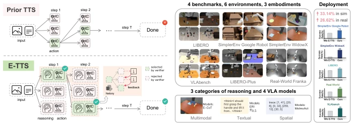
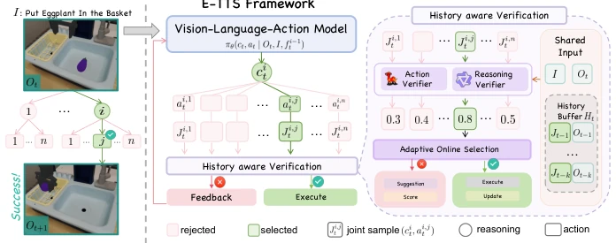
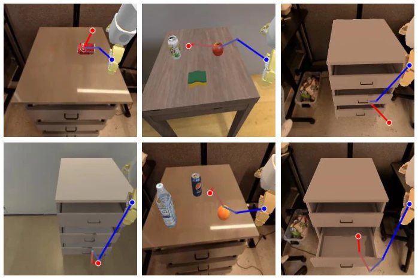
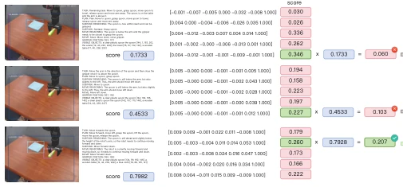
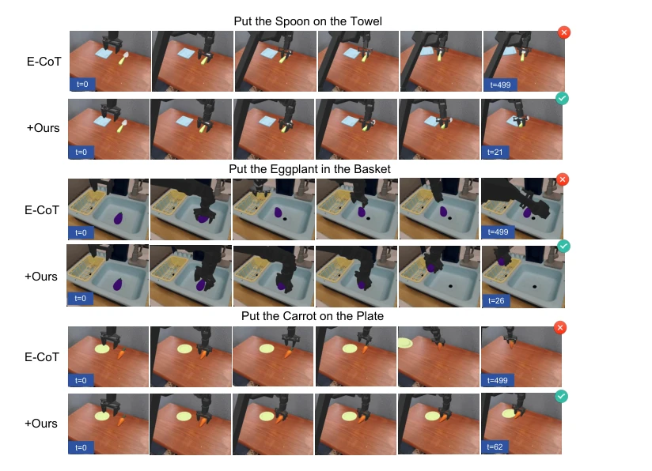
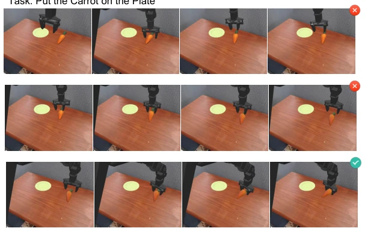
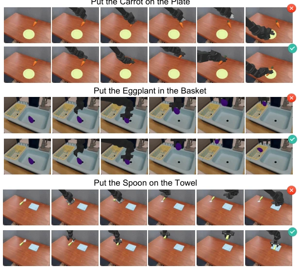
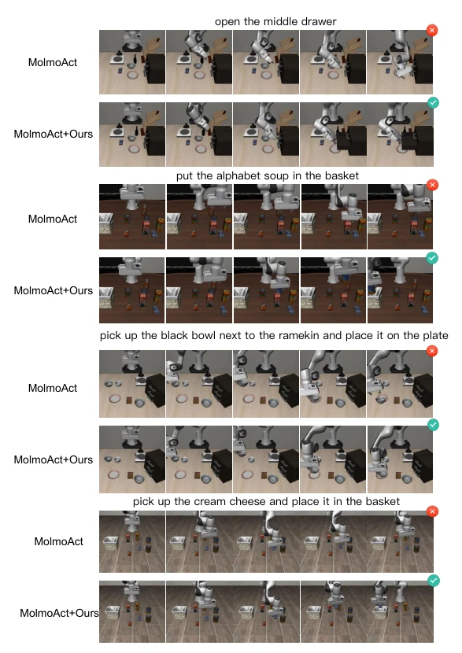
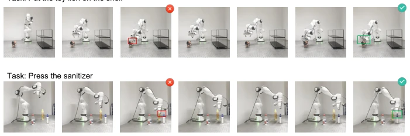

This E-TTS paper essentially fills a logical gap in embodied TTS. Previous TTS methods mostly only handle action sampling, akin to headless flies; this work binds reasoning and action together for scoring and incorporates a historical memory buffer, effectively clarifying the "closed-loop" mechanism. However, employing a large model like Qwen2.5-VL for the reasoning verifier inevitably leads to exploding reasoning latency. Although the authors claim optimizations, real-time performance on real hardware remains a significant drawback. The experimental data is impressive, showing a 33% improvement in simulation and 26% on real hardware, yet specific latency figures are omitted, merely described as a "marginal increase," which somewhat downplays the issue. Overall, it is a useful plugin, but one should not expect it to run on low-compute edge devices. While the zero-shot verifier is convenient, its generalization to unseen scenarios is questionable, especially since fine-tuning the verifier was not mentioned.
Embodied TTS currently faces two major drawbacks: first, the decoupling of reasoning and action; existing methods [11, 15, 17] only manage action scaling, resulting in a disconnect between high-level planning and execution; second, the neglect of historical context. Embodied tasks involve long-sequence decision-making, where action quality cannot be evaluated based solely on current observations. For instance, although Hume [31] and RoboMonkey [17] attempt TTS, they lack the utilization of historical trajectories and feedback mechanisms, making them difficult to handle complex scenarios. E-TTS aims to address the reasoning-action alignment and the absence of historical context, enhancing policy robustness without the need for retraining. In embodied tasks, past states often dictate the feasibility of current actions; ignoring history leads to short-sighted decision-making, which is the core pain point that existing TTS methods have failed to resolve.
The core of E-TTS is "Reasoning-Action Joint Sampling + History-Aware Verification". In terms of workflow, the VLA model generates multiple (reasoning, action) pairs stored in the history buffer H_t. During the verification stage, the Reasoning Verifier (Qwen2.5-VL) evaluates reasoning logic, while the Action Verifier (LLaVA-7B) evaluates action feasibility, with both jointly scoring. The selection stage employs an ε-greedy strategy to balance exploration and exploitation. If criteria are not met, feedback-guided iterative optimization is triggered, feeding failure reasons as input for the next sampling round. The entire framework is modular and pluggable, supporting various VLA models. The key innovation lies in incorporating historical trajectories into the verification context and achieving closed-loop correction of reasoning and action. Through the history buffer, the model remembers previous failure lessons, avoiding repeating mistakes, thereby improving success rates for long-sequence tasks.
Testing was conducted on SimplerEnv, LIBERO, VLAbench, and the real robot Franka. Baselines include E-CoT, MolmoAct, π0.5, ER-1, and RoboMonkey. The metric is success rate. E-TTS achieved a maximum improvement of 33.14% in simulation and 26.62% on real hardware. Ablation experiments demonstrate that the feedback mechanism, history buffer, and joint scoring are indispensable. Parameter analysis indicates that a 1:1 ratio for reasoning and action sampling is optimal. Regarding latency, compared to RoboMonkey, execution time increased by only 7.8%, while success rate improved by 51.5%. Real hardware experiments demonstrated self-correction capabilities. In the perturbation test on LIBERO-Plus, E-TTS exhibited stronger robustness, proving its generalization capability is superior to baseline models, making it suitable for complex and dynamic environments.
其他图片Other Figures

Fig. 1: Overview. E-TTS is an embodied test-time scaling framework that integrates reasoning and action scaling for robotic manipulation through history-aware, closed- loop interactions with vision-language verifiers. When combined with standard VLA models, E-TTS consistently enhances performance, achieving up to a 33.14% improve- ment in simulation and 26.62% in real-world scenarios.

Fig. 2: Overview of the proposed E-TTS framework. At timestep t, given an instruction I and the current observation O_t , the Vision-Language-Action model jointly samples multiple reasoning-action pairs J_t ^ { i,j } = (c _ t^i, a_t^{i,j}) . Each candidate is evaluated by the History-aware Verification module based on history buffer H_t , O_t and I , which applies both reasoning and action verifiers to assess consistency. Through Adaptive Online Selection, the best pair is executed; otherwise, Feedback-Guided Refinement is triggered to resample improved candidates.

Fig. 5: Visualization of spatial reasoning traces. Each example shows the overlaid keypoints representing the predicted robot trajectory, where blue and red dots indicate the start and end positions, respectively. Well-aligned traces correspond to physically plausible reasoning, while misaligned traces indicate inconsistent or infeasible spatial grounding.

Fig. 6: Example of the selection process. The figure demonstrates three iterations. The first two are rejected due to incomplete object detection (missing the spoon and the cloth, respectively), while the third successfully identifies all objects and achieves the highest joint score for execution.

Fig. 7: Qualitative comparison between E-CoT and E-CoT+Ours (E-TTS) on Sim- plerEnv across three manipulation tasks:“Put the Spoon on the Towel,”, “Put the Egg- plant in the Basket,” and “Put the Carrot on the Plate.” Each row shows temporal execution frames. While E-CoT often fails to complete the placement action, our ap- proach achieves precise object manipulation with shorter completion time and higher success rate.

Fig. 8: Visualization of self-corrective behaviors exhibited by E-CoT + Ours in the task “Put the carrot on the plate.” Each row shows consecutive attempts from the same rollout. After failing to align the carrot with the plate in the first and second tries, the model re-evaluates its reasoning and action candidates through closed-loop feedback and successfully completes the task in the third attempt. This demonstrates the effectiveness of our history-aware joint reasoning–action scaling in enabling adaptive correction during sequential manipulation.

Fig. 9: Qualitative comparison between ER-1 and ER-1+Ours (E-TTS) on SimplerEnv on three manipulation tasks: “Put the Carrot on the Plate,” “Put the Eggplant in the Basket,” and “Put the Spoon on the Towel.” While ER-1 often fails to complete fine- grained placement due to inaccurate spatial reasoning, our E-TTS-enhanced model achieves more consistent object alignment and successful task completion.

Fig. 10: Qualitative comparison between MolmoAct and MolmoAct+Ours on LIBERO on four manipulation tasks: “Open the Middle Drawer,” “Put the Alphabet Soup in the Basket,” “Pick up the Black Bowl Next to the Ramekin and Place it on the Plate,” and “Pick up the Cream Cheese and Place it in the Basket.” While MolmoAct often fails to accomplish fine-grained actions or misinterprets spatial relations, our method con- sistently completes each task with accurate grasping, correct placement, and improved temporal efficiency.

Fig. 11: Visualization of real-world rollouts on two representative tasks: Put the toy lion on the shelf (top) and Press the sanitizer (bottom). Each row illustrates sequential observations from the robot during execution, where green boxes denote successful in- teractions and red boxes indicate failed attempts. The results highlight that basemodel + E-TTS can recover from previous failures and successfully complete the task through self-corrective behaviors.